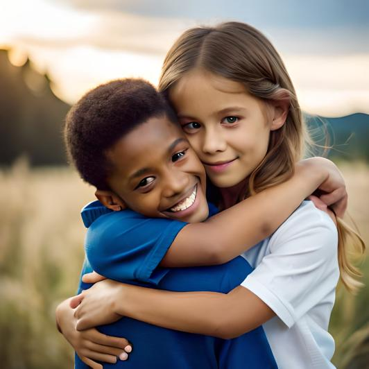

Já teve vontade de ajudar um projeto voluntário mas ficou sem saber o que poderia fazer?


GAA AFETO MOSSORÓ
Já teve vontade de ajudar um projeto voluntário mas ficou sem saber o que poderia fazer?
Os GAA são grupos formados pela sociedade civil que trabalham voluntariamente para a divulgação de uma nova cultura para as adoções.
Não precisa participar apenas os que pensam em adotar ou já adotaram. Apesar de os que já passaram pelo processo da adoção serem muito importantes nessa discussão, podem também participar todos os que querem colaborar.